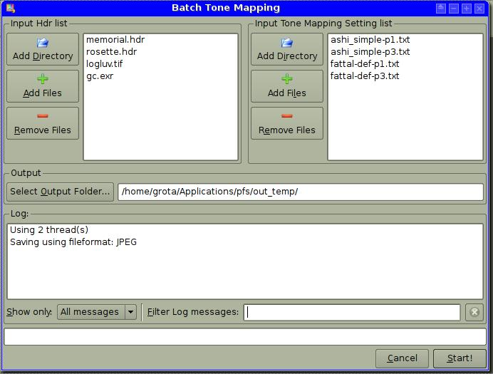

This window lets you tone map a batch of M hdr files using N tone mapping setting files. After the process you'll get M*N LDR results.
The top-left list contains the input hdrs, the top-right list contains the input tone mapping setting files.
You have to specify an output directory where the output LDR files will be saved to.
You can also always see what's happening in the Log panel at the bottom. You can filter the visualization of the log messages using the drop-down menu on the bottom-left and the text-field at the bottom-right of the window.
